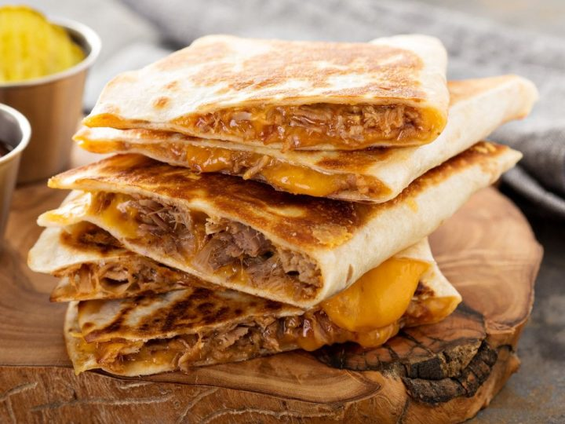

Quesedilla

Description
Indulge in the cheesy goodness of quesadillas – warm tortillas filled with melted cheese and your favorite fillings.
Crispy on the outside, creamy on the inside, they're perfect for any occasion, from quick dinners to casual gatherings.
Dive in and savor the comfort of this classic dish.
Ingrediants
- 1-2 tortillas. Any brand works, but you can decide if you want the tortilla folded in half, or 2 tortillas together.
-
~4 small pinches of (Mozzarella, Oaxaca, or Montery Jack cheese).
- Most cheeses are fine, but the taste of oaxaca cheese is more authentic.
- If you don’t have pre-grated cheese, you can cut thin slices off of the block of cheese.
- A thin coating of oil on the pan. It will be more traditional, but also more unhealthy. (Optional)
- Any ingredients you want. ie, veggies, chicken, mushrooms (cooked), or beans
Steps
- Heat a pan to medium with an (optional) thin coating of oil.
-
Lay a single tortilla down on the pan and arrange cheese on the edges.
- Arrange on 1 edge if you are making a folded quesadilla. Do both edges if using 2 tortillas.
The cheese will help make sure the ingredients don’t fall out when flipping.
- Add the ingredients onto one half of the tortilla if using 1, or the entire surface if using 2.
-
Fold empty half of the tortilla in the pan onto itself if you are only using one tortilla.
- If you are using 2 simply place the second on top of the first.
-
Periodically flip the tortilla until both sides are golden brown.
- This may be hard if using 2 tortillas, so try your best or transfer it to a plate, flip it with your hands,
and transfer it back to the pan.